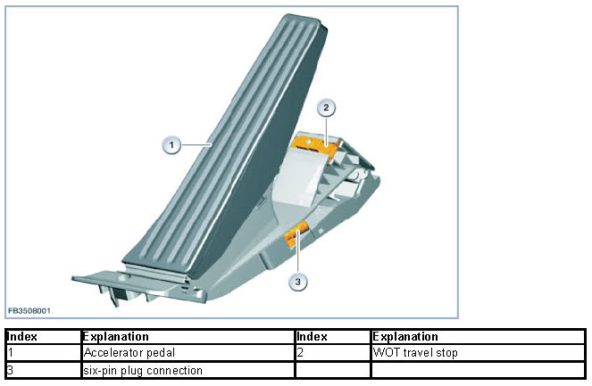
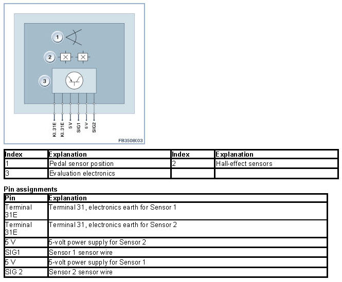
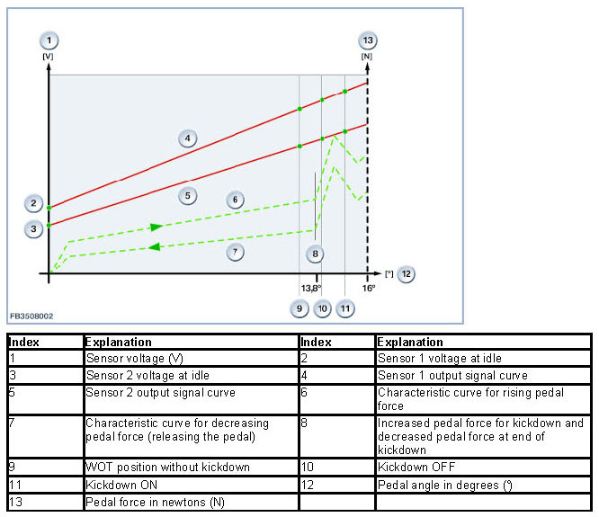

Accelerator Pedal Module
Accelerator Pedal Module
Accelerator pedal module
The accelerator-pedal module registers accelerator-pedal position and then transmits driver demand to the engine-management control unit in the form of electrical signals.
Functional description
Accelerator pedal position is monitored separately by 2 individual sensors. Two sensors are employed to provide redundancy, implement the monitoring function and facilitate recognition of malfunctions.
The sensors register accelerator-pedal travel as angular deflection, with data being transmitted directly to the engine-management control unit as analogue linear voltage curves for pedal angle (°). Overall pedal travel is mechanically expressed as 16° ±0.5°.
Each change in accelerator-pedal position is transmitted to the engine-management control unit with a maximum lag of 50 milliseconds. Sensor signals are transmitted in analogue form. The engine-management control unit monitors the two input signals from the sensors and compares them for plausibility (factors such as mutual synchronicity, linearity, etc.).

Spring elements retract the accelerator pedal to its initial position when it is released.
Structure and inner electrical connection
The accelerator-pedal module functions with induction. The two sensors receive separate 5-volt power supplies from the engine-management control unit, to which they also have separate earth connections. The electronic processing circuitry generates analogue voltage signals, reflecting the accelerator pedal's position, for use by the engine-management control unit. The sensor signals are transmitted to the engine-management control unit separately.

Specifications and characteristic curve
The characteristic curve is for an accelerator-pedal module with a kickdown switch.

Start of kickdown phase: The detent position at which increased pedal force is required lies between a maximum of 13.8° and a minimum of 1.6° before the mechanical travel stop. On the characteristic curve, the threshold value for kickdown ON must be immediately after the point for maximum pedal force for initiating kickdown.
End of kickdown phase: The final position for increased pedal force occurs 1.6° before the mechanical travel stop at the earliest and 13.8° before it is reached at the latest. On the characteristic curve for decreasing pedal force the threshold value for kickdown OFF must be immediately after the point for maximum pedal force.
Voltage values: The signal data for the two sensors are a percentage of the voltage supply. Sensor 1: At idle the value is 15 % of the supply voltage, at the travel stop it is roughly 90 %. Sensor 2: At idle the value is 7.5 % of the supply voltage, and roughly 45% at the travel stop.
Note the following specifications for the accelerator-pedal module:
Size Value
Voltage range 4.5 to 5.5 V
Maximum power consumption 15 mA
Temperature range -40 to 80 °C
Diagnosis instructions
Failure of the component:
The sole function of the accelerator-pedal module is to relay information regarding driver demand. It does not directly intervene in the operation of any other actuator. The engine-management control unit must ensure that the vehicle reverts to a safe and secure condition should the sensor signals fail.
If the component fails, the following behavior is to be expected:
- Signal failure from one sensor
- Fault entry in the engine control unit
- Check Control message
- Engine reverts to operation in its emergency limp-home mode (vehicle power is electronically limited, continued driving possible but with restrictions)
- Failure of both sensor signals
- Fault entry in the engine control unit
- Check Control message
- Engine runs in emergency mode (continued driving is not possible, engine remains at idle)
We can assume no liability for printing errors or inaccuracies in this document and reserve the right to introduce technical modifications at any time.